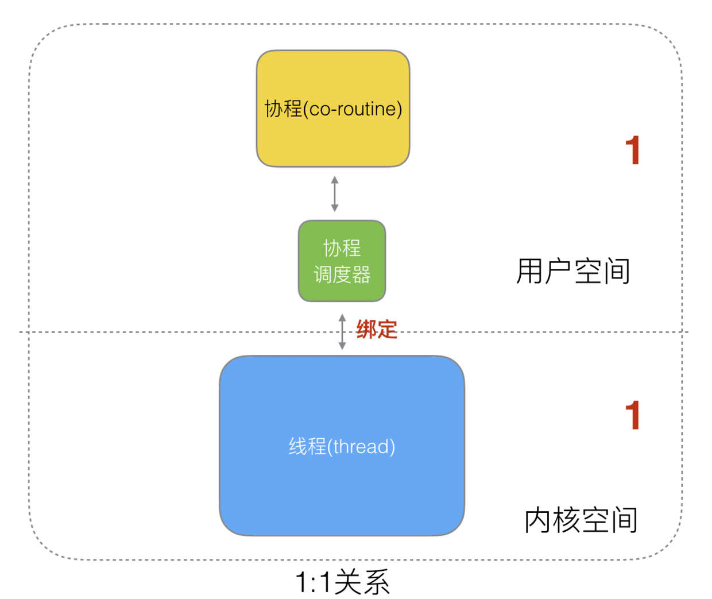
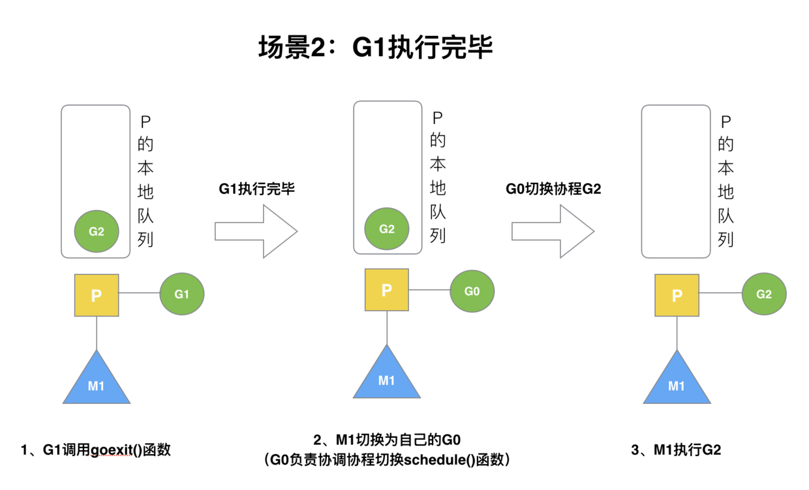
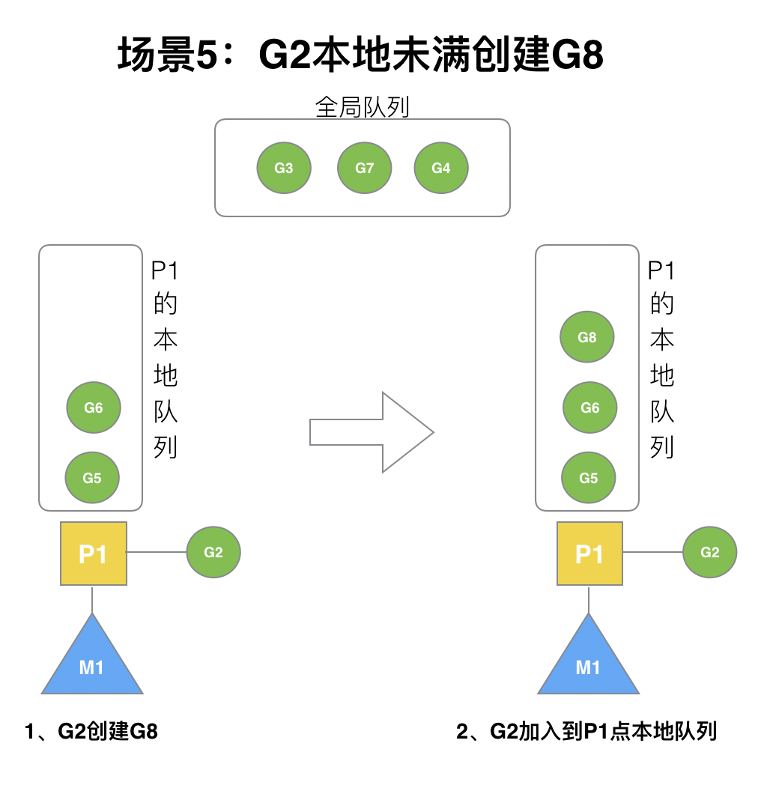
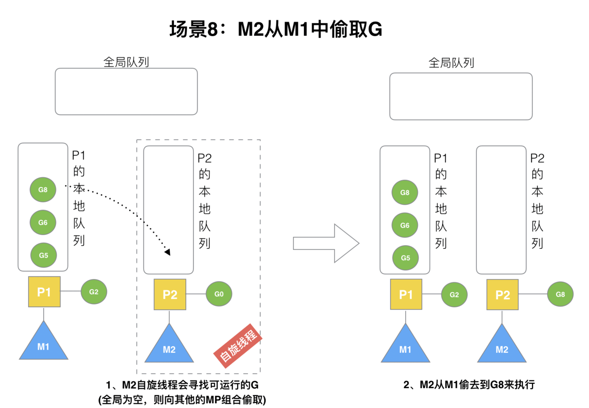
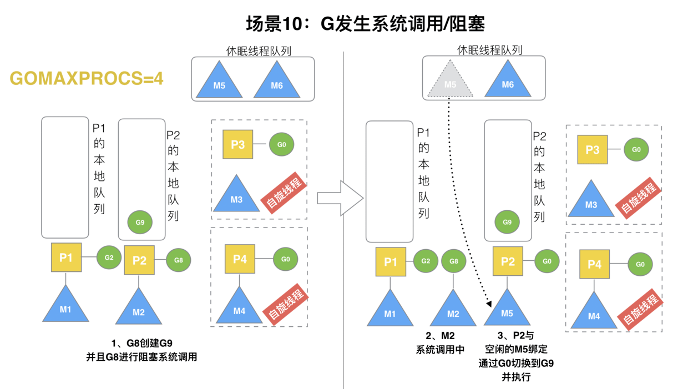

Goroutine详解
概念
进程 每个进程都有自己的独立内存空间，拥有自己独立的地址空间、独立的堆和栈，既不共享堆，亦不共享栈。一个程序至少有一个进程，一个进程至少有一个线程。进程切换只发生在内核态。
线程 线程拥有自己独立的栈和共享的堆，共享堆，不共享栈，是由操作系统调度，是操作系统调度（CPU调度）执行的最小单位。对于进程和线程，都是有内核进行调度，有 CPU 时间片的概念，进行抢占式调度。内核由系统内核进行调度，系统为了实现并发，会不断地切换线程执行，由此会带来线程的上下文切换。
协程 协程线程一样共享堆，不共享栈，协程是由程序员在协程的代码中显示调度。协程 (用户态线程) 是对内核透明的，也就是系统完全不知道有协程的存在，完全由用户自己的程序进行调度。在栈大小分配方便，且每个协程占用的默认占用内存很小，只有 2kb ，而线程需要 8mb，相较于线程，因为协程是对内核透明的，所以栈空间大小可以按需增大减小。
并发 多线程程序在单核上运行
并行 多线程程序在多核上运行
协程与线程主要区别是它将不再被内核调度，而是交给了程序自己而线程是将自己交给内核调度，所以 golang 中就会有调度器的存在。
详解
进程
在计算机中，单个 CPU 架构下，每个 CPU 同时只能运行一个任务，也就是同时只能执行一个计算。如果一个进程跑着，就把唯一一个 CPU 给完全占住，显然是不合理的。而且很大概率上，CPU 被阻塞了，不是因为计算量大，而是因为网络阻塞。如果此时 CPU 一直被阻塞着，其他进程无法使用，那么计算机资源就是浪费了。
这就出现了多进程调用了。多进程就是指计算机系统可以同时执行多个进程，从一个进程到另外一个进程的转换是由操作系统内核管理的，一般是同时运行多个软件。
线程
有了多进程，为什么还要线程？原因如下：
- 进程间的信息难以共享数据，父子进程并未共享内存，需要通过进程间通信（IPC），在进程间进行信息交换，性能开销较大。
- 创建进程（一般是调用 fork 方法）的性能开销较大。
在一个进程内，可以设置多个执行单元，这个执行单元都运行在进程的上下文中，共享着同样的代码和全局数据，由于是在全局共享的，就不存在像进程间信息交换的性能损耗，所以性能和效率就更高了。这个运行在进程中的执行单元就是线程。
协程
Goroutines 是使并发易于使用的一部分。 这个想法已经存在了一段时间，就是将独立执行的函数（协程）多路复用到一组线程上。 当协程阻塞时，例如通过调用阻塞系统调用，运行时会自动将同一操作系统线程上的其他协程移动到不同的可运行线程，这样它们就不会被阻塞。 程序员看不到这些，这就是重点。 我们称之为 goroutines 的结果可能非常便宜：除了堆栈的内存之外，它们的开销很小，只有几千字节。
为了使堆栈变小，Go 的运行时使用可调整大小的有界堆栈。 一个新创建的 goroutine 被赋予几千字节，这几乎总是足够的。 如果不是，运行时会自动增加（和缩小）用于存储堆栈的内存，从而允许许多 goroutine 存在于适度的内存中。 每个函数调用的 CPU 开销平均约为三个廉价指令。 在同一个地址空间中创建数十万个 goroutine 是很实际的。 如果 goroutines 只是线程，系统资源会以更少的数量耗尽。
协程是通过多路复用到一组线程上，所以本质上，协程就是轻量级的线程。但是必须要区分的一点是，协程是用用户态的，进程跟线程都是内核态，这点非常重要，这也是协程为什么高效的原因。
协程的优势如下：
节省 CPU：避免系统内核级的线程频繁切换，造成的 CPU 资源浪费。协程是用户态的线程，用户可以自行控制协程的创建于销毁，极大程度避免了系统级线程上下文切换造成的资源浪费。
节约内存：在 64 位的 Linux 中，一个线程需要分配 8MB 栈内存和 64MB 堆内存，系统内存的制约导致我们无法开启更多线程实现高并发。而在协程编程模式下，只需要几千字节 (执行Go协程只需要极少的栈内存，大概4~5KB，默认情况下，线程栈的大小为1MB) 可以轻松有十几万协程，这是线程无法比拟的。
开发效率：使用协程在开发程序之中，可以很方便的将一些耗时的 IO 操作异步化，例如写文件、耗时 IO 请求等。并且它们并不是被操作系统所调度执行，而是程序员手动可以进行调度的。
高效率：协程之间的切换发生在用户态，在用户态没有时钟中断，系统调用等机制，因此效率高。
GMP调度器
简介
- G 表示：goroutine，即 Go 协程，每个 go 关键字都会创建一个协程。
- M 表示：thread 内核级线程，所有的 G 都要放在 M 上才能运行。
- P 表示：processor 处理器，调度 G 到 M 上，其维护了一个队列，存储了所有需要它来调度的 G。
调度器由来
我们知道，一切的软件都是跑在操作系统上，真正用来干活 (计算) 的是 CPU。早期的操作系统每个程序就是一个进程，直到一个程序运行完，才能进行下一个进程，就是 “单进程时代”，一切的程序只能串行发生。
早期的单进程操作系统，面临 2 个问题：
- 单一的执行流程，计算机只能一个任务一个任务处理。
- 进程阻塞所带来的 CPU 时间浪费。
那么能不能有多个进程来宏观一起来执行多个任务呢？
后来操作系统就具有了最早的并发能力：多进程并发，当一个进程阻塞的时候，切换到另外等待执行的进程，这样就能尽量把 CPU 利用起来，CPU 就不浪费了。

在多进程 / 多线程的操作系统中，就解决了阻塞的问题，因为一个进程阻塞 cpu 可以立刻切换到其他进程中去执行，而且调度 cpu 的算法可以保证在运行的进程都可以被分配到 cpu 的运行时间片。这样从宏观来看，似乎多个进程是在同时被运行。
但新的问题就又出现了，进程拥有太多的资源，进程的创建、切换、销毁，都会占用很长的时间，CPU 虽然利用起来了，但如果进程过多，CPU 有很大的一部分都被用来进行进程调度了。

很明显，CPU 调度切换的是进程和线程。尽管线程看起来很美好，但实际上多线程开发设计会变得更加复杂，要考虑很多同步竞争等问题，如锁、竞争冲突等。
多进程、多线程已经提高了系统的并发能力，但是在当今互联网高并发场景下，为每个任务都创建一个线程是不现实的，因为会消耗大量的内存 (进程虚拟内存会占用 4GB [32 位操作系统], 而线程也要大约 4MB)。
大量的进程 / 线程出现了新的问题
高内存占用
调度的高消耗 CPU
好了，然后工程师们就发现，其实一个线程分为 “内核态 “线程和” 用户态 “线程。
一个 “用户态线程” 必须要绑定一个 “内核态线程”，但是 CPU 并不知道有 “用户态线程” 的存在，它只知道它运行的是一个 “内核态线程”(Linux 的 PCB 进程控制块)。

这样，我们再去细化去分类一下，内核线程依然叫 “线程 (thread)”，用户线程叫 “协程 (co-routine)”.

看到这里，我们就要开脑洞了，既然一个协程 (co-routine) 可以绑定一个线程 (thread)，那么能不能多个协程 (co-routine) 绑定一个或者多个线程 (thread) 上呢。
之后，我们就看到了有 3 种协程和线程的映射关系：
N 个协程绑定 1 个线程，优点就是协程在用户态线程即完成切换，不会陷入到内核态，这种切换非常的轻量快速。但也有很大的缺点，1 个进程的所有协程都绑定在 1 个线程上。
缺点：
- 某个程序用不了硬件的多核加速能力
- 一旦某协程阻塞，造成线程阻塞，本进程的其他协程都无法执行了，根本就没有并发的能力了。

1 个协程绑定 1 个线程，这种最容易实现。协程的调度都由 CPU 完成了，不存在 N:1 缺点，
缺点：
- 协程的创建、删除和切换的代价都由 CPU 完成，有点略显昂贵了。

M 个协程绑定 1 个线程，是 N:1 和 1:1 类型的结合，克服了以上 2 种模型的缺点，但实现起来最为复杂。

协程跟线程是有区别的，线程由 CPU 调度是抢占式的，协程由用户态调度是协作式的，一个协程让出 CPU 后，才执行下一个协程。
Go 为了提供更容易使用的并发方法，使用了 goroutine 和 channel。goroutine 来自协程的概念，让一组可复用的函数运行在一组线程之上，即使有协程阻塞，该线程的其他协程也可以被 runtime 调度，转移到其他可运行的线程上。最关键的是，程序员看不到这些底层的细节，这就降低了编程的难度，提供了更容易的并发。
Go 中，协程被称为 goroutine，它非常轻量，一个 goroutine 只占几 KB，并且这几 KB 就足够 goroutine 运行完，这就能在有限的内存空间内支持大量 goroutine，支持了更多的并发。虽然一个 goroutine 的栈只占几 KB，但实际是可伸缩的，如果需要更多内容，runtime 会自动为 goroutine 分配。
Goroutine 特点：
- 占用内存更小（几 kb）
- 调度更灵活 (runtime 调度)
调度器设计
下面我们来看看被废弃的 golang 调度器是如何实现的？

M 想要执行、放回 G 都必须访问全局 G 队列，并且 M 有多个，即多线程访问同一资源需要加锁进行保证互斥 / 同步，所以全局 G 队列是有互斥锁进行保护的。
老调度器有几个缺点：
- 创建、销毁、调度 G 都需要每个 M 获取锁，这就形成了激烈的锁竞争。
- M 转移 G 会造成延迟和额外的系统负载。比如当 G 中包含创建新协程的时候，M 创建了 G’，为了继续执行 G，需要把 G’交给 M’执行，也造成了很差的局部性，因为 G’和 G 是相关的，最好放在 M 上执行，而不是其他 M’。
- 系统调用 (CPU 在 M 之间的切换) 导致频繁的线程阻塞和取消阻塞操作增加了系统开销。
面对之前调度器的问题，Go 设计了新的调度器。
在新调度器中，除了 M (thread) 和 G (goroutine)，又引进了 P (Processor)。

Processor，它包含了运行 goroutine 的资源，如果线程想运行 goroutine，必须先获取 P，P 中还包含了可运行的 G 队列。
GMP模型
在 Go 中，线程是运行 goroutine 的实体，调度器的功能是把可运行的 goroutine 分配到工作线程上。

- 全局队列（Global Queue）：存放等待运行的 G。
- P 的本地队列：同全局队列类似，存放的也是等待运行的 G，存的数量有限，不超过 256 个。新建 G’时，G’优先加入到 P 的本地队列，如果队列满了，则会把本地队列中一半的 G 移动到全局队列。
- P 列表：所有的 P 都在程序启动时创建，并保存在数组中，最多有 GOMAXPROCS(可配置) 个。
- M：线程想运行任务就得获取 P，从 P 的本地队列获取 G，P 队列为空时，M 也会尝试从全局队列拿一批 G 放到 P 的本地队列，或从其他 P 的本地队列偷一半放到自己 P 的本地队列。M 运行 G，G 执行之后，M 会从 P 获取下一个 G，不断重复下去。
Goroutine 调度器和 OS 调度器是通过 M 结合起来的，每个 M 都代表了 1 个内核线程，OS 调度器负责把内核线程分配到 CPU 的核上执行。
P和M
P 的数量：
由启动时环境变量 $GOMAXPROCS 或者是由 runtime 的方法 GOMAXPROCS() 决定。这意味着在程序执行的任意时刻都只有 $GOMAXPROCS 个 goroutine 在同时运行。
M 的数量:
- go 语言本身的限制：go 程序启动时，会设置 M 的最大数量，默认 10000. 但是内核很难支持这么多的线程数，所以这个限制可以忽略。
- runtime/debug 中的 SetMaxThreads 函数，设置 M 的最大数量
- 一个 M 阻塞了，会创建新的 M。
M 与 P 的数量没有绝对关系，一个 M 阻塞，P 就会去创建或者切换另一个 M，所以，即使 P 的默认数量是 1，也有可能会创建很多个 M 出来。
P 何时创建：在确定了 P 的最大数量 n 后，运行时系统会根据这个数量创建 n 个 P。
M 何时创建：没有足够的 M 来关联 P 并运行其中的可运行的 G。比如所有的 M 此时都阻塞住了，而 P 中还有很多就绪任务，就会去寻找空闲的 M，而没有空闲的，就会去创建新的 M。
设计策略
复用线程：避免频繁的创建、销毁线程，而是对线程的复用。
work stealing 机制
当本线程无可运行的 G 时，尝试从其他线程绑定的 P 偷取 G，而不是销毁线程。
hand off 机制
当本线程因为 G 进行系统调用阻塞时，线程释放绑定的 P，把 P 转移给其他空闲的线程执行。
利用并行：GOMAXPROCS 设置 P 的数量，最多有 GOMAXPROCS 个线程分布在多个 CPU 上同时运行。GOMAXPROCS 也限制了并发的程度，比如 GOMAXPROCS = 核数/2，则最多利用了一半的 CPU 核进行并行。
抢占：在 coroutine 中要等待一个协程主动让出 CPU 才执行下一个协程，在 Go 中，一个 goroutine 最多占用 CPU 10ms，防止其他 goroutine 被饿死，这就是 goroutine 不同于 coroutine 的一个地方。
全局 G 队列：在新的调度器中依然有全局 G 队列，但功能已经被弱化了，当 M 执行 work stealing 从其他 P 偷不到 G 时，它可以从全局 G 队列获取 G。
go func() 调度流程
流程.png)
从上图我们可以分析出几个结论：
- 我们通过 go func () 来创建一个 goroutine；
- 有两个存储 G 的队列，一个是局部调度器 P 的本地队列、一个是全局 G 队列。新创建的 G 会先保存在 P 的本地队列中，如果 P 的本地队列已经满了就会保存在全局的队列中；
- G 只能运行在 M 中，一个 M 必须持有一个 P，M 与 P 是 1：1 的关系。M 会从 P 的本地队列弹出一个可执行状态的 G 来执行，如果 P 的本地队列为空，就会向其他的 MP 组合偷取一个可执行的 G 来执行；
- 一个 M 调度 G 执行的过程是一个循环机制；
- 当 M 执行某一个 G 时候如果发生了 syscall 或则其余阻塞操作，M 会阻塞，如果当前有一些 G 在执行，runtime 会把这个线程 M 从 P 中摘除 (detach)，然后再创建一个新的操作系统的线程 (如果有空闲的线程可用就复用空闲线程) 来服务于这个 P；
- 当 M 系统调用结束时候，这个 G 会尝试获取一个空闲的 P 执行，并放入到这个 P 的本地队列。如果获取不到 P，那么这个线程 M 变成休眠状态， 加入到空闲线程中，然后这个 G 会被放入全局队列中。
调度器生命周期

特殊的 M0 和 G0
M0
M0 是启动程序后的编号为 0 的主线程，这个 M 对应的实例会在全局变量 runtime.m0 中，不需要在 heap 上分配，M0 负责执行初始化操作和启动第一个 G， 在之后 M0 就和其他的 M 一样了。
G0
G0 是每次启动一个 M 都会第一个创建的 goroutine，G0 仅用于负责调度的 G，G0 不指向任何可执行的函数，每个 M 都会有一个自己的 G0。在调度或系统调用时会使用 G0 的栈空间，全局变量的 G0 是 M0 的 G0。
调度器调度场景过程全解析
场景1
P 拥有 G1，M1 获取 P 后开始运行 G1，G1 使用 go func() 创建了 G2，为了局部性 G2 优先加入到 P1 的本地队列。

场景2
G1 运行完成后 (函数：goexit)，M 上运行的 goroutine 切换为 G0，G0 负责调度时协程的切换（函数：schedule）。从 P 的本地队列取 G2，从 G0 切换到 G2，并开始运行 G2 (函数：execute)。实现了线程 M1 的复用。

场景3
假设每个 P 的本地队列只能存 3 个 G。G2 要创建了 6 个 G，前 3 个 G（G3, G4, G5）已经加入 p1 的本地队列，p1 本地队列满了。
场景4
G2 在创建 G7 的时候，发现 P1 的本地队列已满，需要执行负载均衡 (把 P1 中本地队列中前一半的 G，还有新创建 G 转移到全局队列)

这些 G 被转移到全局队列时，会被打乱顺序。所以 G3,G4,G7 被转移到全局队列。
场景5
G2 创建 G8 时，P1 的本地队列未满，所以 G8 会被加入到 P1 的本地队列。

G8 加入到 P1 点本地队列的原因还是因为 P1 此时在与 M1 绑定，而 G2 此时是 M1 在执行。所以 G2 创建的新的 G 会优先放置到自己的 M 绑定的 P 上。
场景6
规定：在创建 G 时，运行的 G 会尝试唤醒其他空闲的 P 和 M 组合去执行。

假定 G2 唤醒了 M2，M2 绑定了 P2，并运行 G0，但 P2 本地队列没有 G，M2 此时为自旋线程（没有 G 但为运行状态的线程，不断寻找 G）。
场景7
M2 尝试从全局队列 (简称 “GQ”) 取一批 G 放到 P2 的本地队列（函数：findrunnable()）。M2 从全局队列取的 G 数量符合下面的公式：
n = min(len(GQ)/GOMAXPROCS + 1, len(GQ/2))
至少从全局队列取 1 个 g，但每次不要从全局队列移动太多的 g 到 p 本地队列，给其他 p 留点。这是从全局队列到 P 本地队列的负载均衡。

假定我们场景中一共有 4 个 P（GOMAXPROCS 设置为 4，那么我们允许最多就能用 4 个 P 来供 M 使用）。所以 M2 只从能从全局队列取 1 个 G（即 G3）移动 P2 本地队列，然后完成从 G0 到 G3 的切换，运行 G3。
场景8
假设 G2 一直在 M1 上运行，经过 2 轮后，M2 已经把 G7、G4 从全局队列获取到了 P2 的本地队列并完成运行，全局队列和 P2 的本地队列都空了，如场景 8 图的左半部分。

全局队列已经没有 G，那 m 就要执行 work stealing (偷取)：从其他有 G 的 P 哪里偷取一半 G 过来，放到自己的 P 本地队列。P2 从 P1 的本地队列尾部取一半的 G，本例中一半则只有 1 个 G8，放到 P2 的本地队列并执行。
场景9
G1 本地队列 G5、G6 已经被其他 M 偷走并运行完成，当前 M1 和 M2 分别在运行 G2 和 G8，M3 和 M4 没有 goroutine 可以运行，M3 和 M4 处于自旋状态，它们不断寻找 goroutine。
为什么要让 m3 和 m4 自旋，自旋本质是在运行，线程在运行却没有执行 G，就变成了浪费 CPU. 为什么不销毁现场，来节约 CPU 资源。因为创建和销毁 CPU 也会浪费时间，我们希望当有新 goroutine 创建时，立刻能有 M 运行它，如果销毁再新建就增加了时延，降低了效率。当然也考虑了过多的自旋线程是浪费 CPU，所以系统中最多有 GOMAXPROCS 个自旋的线程 (当前例子中的 GOMAXPROCS=4，所以一共 4 个 P)，多余的没事做线程会让他们休眠。
场景10
假定当前除了 M3 和 M4 为自旋线程，还有 M5 和 M6 为空闲的线程 (没有得到 P 的绑定，注意我们这里最多就只能够存在 4 个 P，所以 P 的数量应该永远是 M>=P, 大部分都是 M 在抢占需要运行的 P)，G8 创建了 G9，G8 进行了阻塞的系统调用，M2 和 P2 立即解绑，P2 会执行以下判断：如果 P2 本地队列有 G、全局队列有 G 或有空闲的 M，P2 都会立马唤醒 1 个 M 和它绑定，否则 P2 则会加入到空闲 P 列表，等待 M 来获取可用的 p。本场景中，P2 本地队列有 G9，可以和其他空闲的线程 M5 绑定。

场景11
G8 创建了 G9，假如 G8 进行了非阻塞系统调用。

M2 和 P2 会解绑，但 M2 会记住 P2，然后 G8 和 M2 进入系统调用状态。当 G8 和 M2 退出系统调用时，会尝试获取 P2，如果无法获取，则获取空闲的 P，如果依然没有，G8 会被记为可运行状态，并加入到全局队列，M2 因为没有 P 的绑定而变成休眠状态 (长时间休眠等待 GC 回收销毁)。
总结，Go 调度器很轻量也很简单，足以撑起 goroutine 的调度工作，并且让 Go 具有了原生（强大）并发的能力。Go 调度本质是把大量的 goroutine 分配到少量线程上去执行，并利用多核并行，实现更强大的并发。